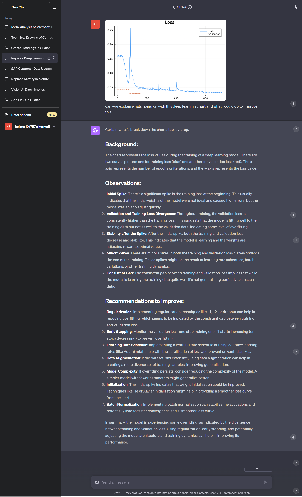
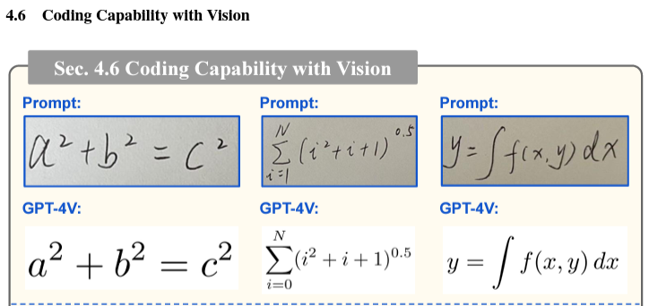
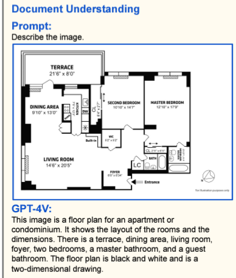
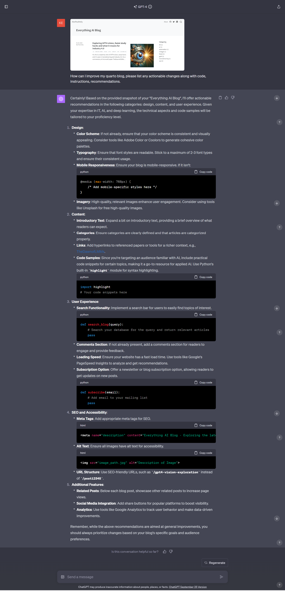
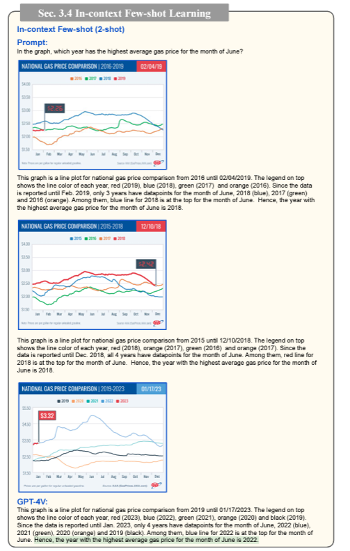
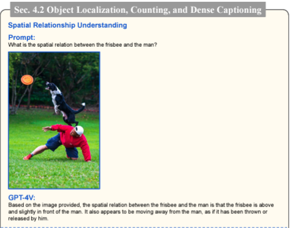
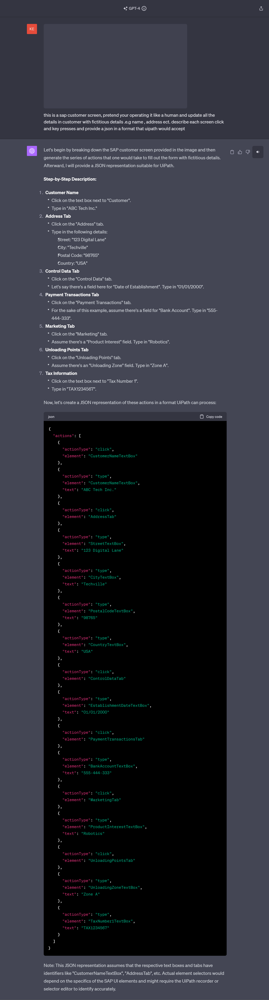

Overview
Hi, this is a explority view of GPT4 vision, study hacks and it’s uses in manufacturing and industry 4.0. Its a commentary of microsoft paper TheDawnofLMMs: PreliminaryExplorationswithGPT-4V(ision) picking out the highlights, my take on how GPT4 vision can be used in daily life, how to maximise my studying of the fast.ai course and what GPT4 vision means for the future of manufacturing and industry 4.0.
The paper and chatgpt vision was discussed with the Fast.AI study group. The study group is a multi-national group of people who are passionate about deep learning and AI. We meet online on Saturdays to run through the course work provided by fastAI, discuss papers and latest trends and get to know each other.
What is GPT4 vision?
GPT4 vision is a new model from openAI. GPT4 is a LMM (Large Multi-Modal Model). Multimodal technology refers to systems that can process and integrate multiple types of inputs and outputs, in gpt4 vision case its input can be text and images and its output is text only (as of this writing, i imagine more will follow).
GPT-4 uses a transformer-style architecture in its neural network. A transformer architecture allows for a better understanding of relationships. It also uses an attention mechanism that allows the neural network to parse out which pieces of data are more relevant than others.
As of writing GPT4 vision is only available to chatgpt premium users and no general api availability. a open source competitor only is LLaVA.
FastAI study hacks with chatgpt vision
Get feedback on your training loss chart
Someone posted a training loss chart in the fast.ai study group and didnt know what was going on. Why not ask your AI study buddy (chatgpt vision) for help instead or along side of posting in fast ai. Whether your a seasoned deep learning pro or a beginner, it might be something simple (or difficult) that chatgpt vision could give you a few ideas for better training or get you passed this road block so you can continue your study…
I wonder how many people have stopped fast.ai (or any course) due to a road block that could have been easily solved with chatgpt vision.

Convert image of a formula to latex/code
(see paper Sec. 4.6 Coding Capability with Vision)
add a image of a formula you’ve seen on a paper and get the results back in latex or even python code. This could be used to help you understand the paper better or even help you write your own paper / model.

Recreate a chart from picture, analyse paper or floor plan
(see paper Sec. 4.4 Scene Text, Table, Chart, and Document Reasoning)
add a image of a paper and ask the model to summarise it for you. Vision will have the benefit over llms (large language models) due to its ability to understand images, charts along with the text.

add a image of a floor plan or cad drawing a get a detailed description of what the floor plan will produce.

recreate a chart from picture
(See paper Sec. 4.6 Coding Capability with Vision)
like a chart on a paper, ask chatgpt to reproduce it with in the format required, e.g. python code and and it will be returned and ready to be ran in your jupyter notebook.

Improve your blog or website
Take a screen shot of your website or blog and ask chatgpt vision to improve it. It will offer suggestions. This could be used to improve your website or blog, or even give you ideas for a new website or blog. It could also be used to generate new content for your website or blog. This could be used to improve your SEO (search engine optimisation) and increase your traffic to your website or blog.

2 shot learning
In the study group, before studying this particular paper we looked at prompting for LLM’s (large language models) and one short learning were giving good results. It seams Chatgpt vision, gives better results with 2 shots or more.

Spatial Relationship Understanding
During the study group, we we’re amazed by what chatgpt vision understood in this picture. It described the dog as jumping up, and the man has thrown the frispy. Theres quite a lot to unpack here. Does it understand real world physics to work out whats going on in the photo, or is it just using the a history of similar photos with stored text. I think its a bit of both, probably more the former, whatever it is, it’s still amazing.

RPA (Robotic Process Automation)
I beleive the uses of this model will be transformational in the RPA space. RPA is a technology that allows anyone today to configure computer software, or a “robot” to emulate and integrate the actions of a human interacting within digital systems to execute a business process. RPA robots utilize the user interface to capture data and manipulate applications just like humans do. They interpret, trigger responses and communicate with other systems in order to perform on a vast variety of repetitive tasks. Only substantially better: an RPA software robot never sleeps and makes zero mistakes.
In manufacturing alone, there are 100’s of use cases to automate processes and tasks. The problem is that RPA is very brittle and requires a lot of manual work to configure and maintain. GPT4 vision will allow for a more natural way to interact with the RPA system. For example, if you want to automate a process that requires you to look at a screen and click on a button, you can now just take a picture of the screen and ask the RPA system to click on the button and if it has knowledge of the system in its weights, it will also know the subquent steps speeding up the process. This will allow for a more natural way to interact with the RPA system and will make it easier to automate processes. The system could provide a feedback loop by continuous monitoring the screens and taking the appropriate action or highlight any issues ready for a oporator to take action.
Here of Generative AI from genta using text only model. Imagine what could be done with gpt4 vision.
In the example below I have given chatgpt a screen and tabs it has never seen and returned something that could easily be used for, the full prompt is “this is a SAP customer screen, pretend your operating it like a human and update all the details in customer with fictitious details .e.g name, address ect. describe each screen click and key presses and provide a json in a format that uipath would accept
”
Personally I’ve never seen SAP but I know a lot of manufacturers use this system and there exist lots of screen shots online so its likely chatgpt could help automate a pipeline to update customer details in SAP and much more. I’ve also seen a lot of RPA systems that use json to describe the steps to take so this could be used to automate the process.ks

I will be performing Future research using real life company data.
- Defect detection : have parts been assembled correctly, any missing parts, parts with defects, etc.
- Safety inspection : are all safety features in place, are all safety features working, are people wearing safety equipment (e.g. helmets, gloves, etc.)
- Component identification : This will be useful to check if the operator has packed all components before shipping to customer, or if the operator has assembled all components before shipping to customer.
- Spot the difference : take a few one shot or 2 shot examples of our products and compare to a fresh product of the assembly line and see how they match.